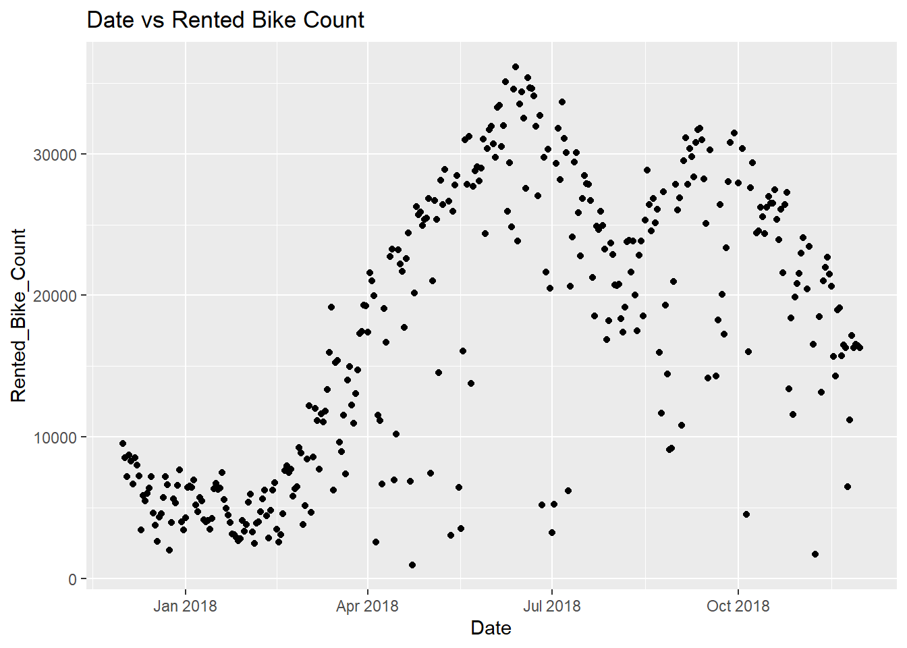
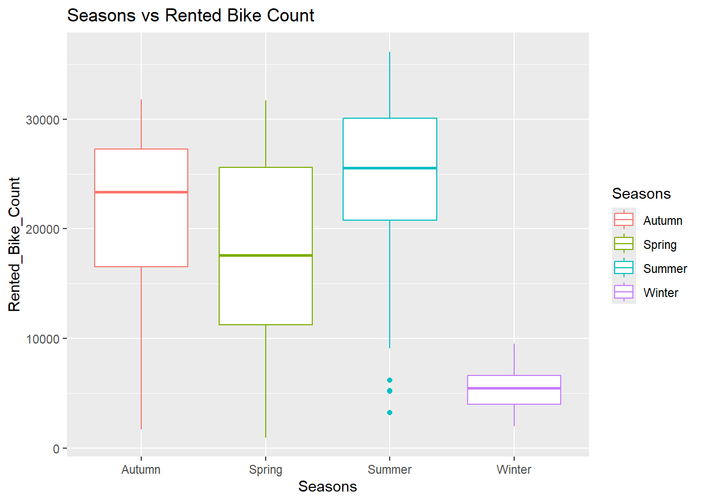
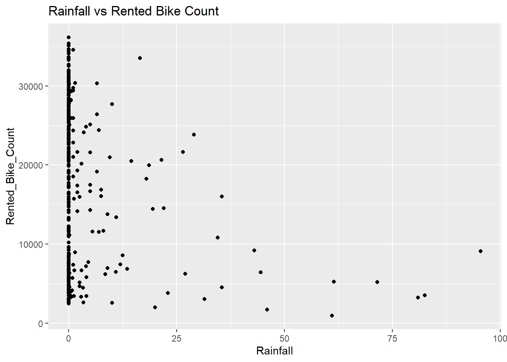
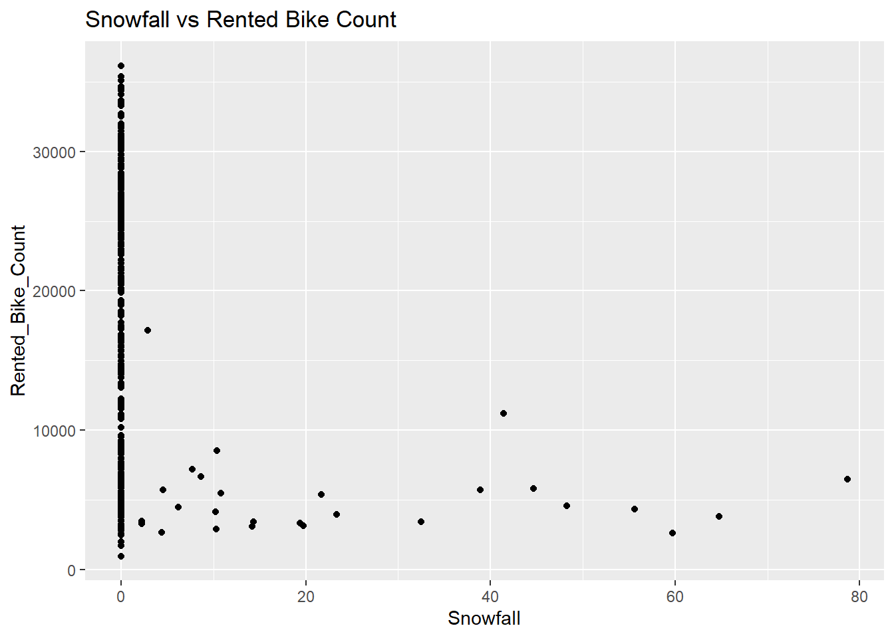
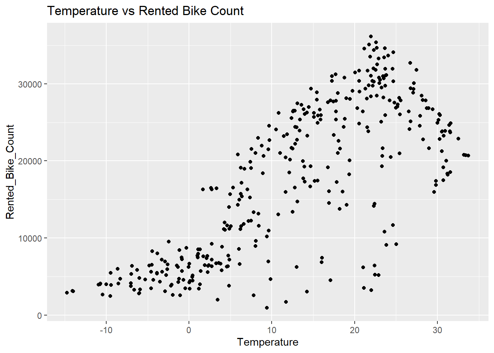
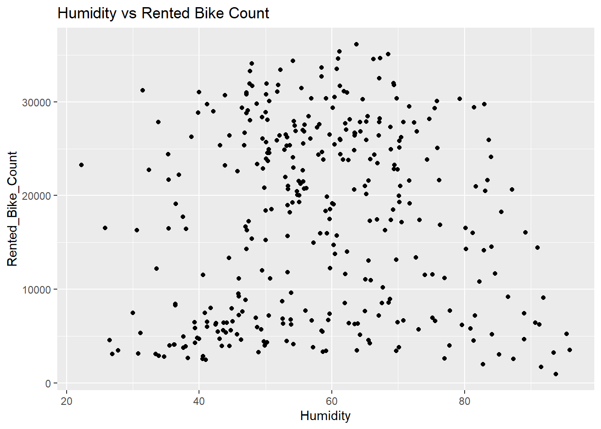
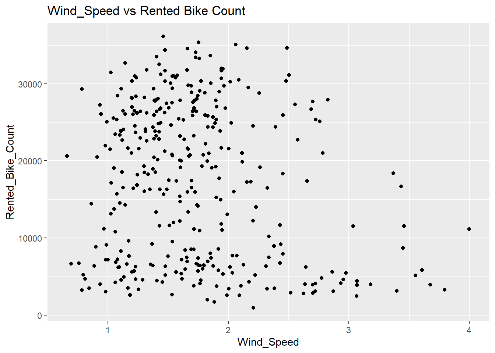
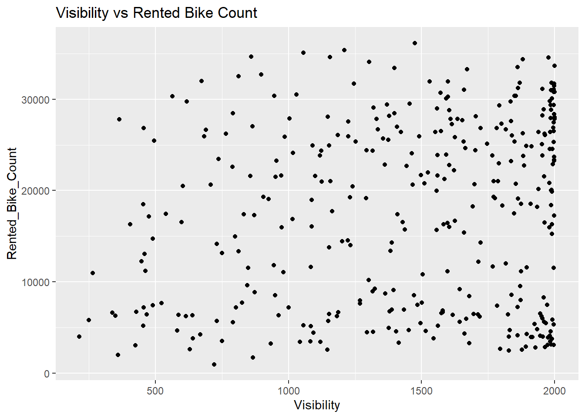
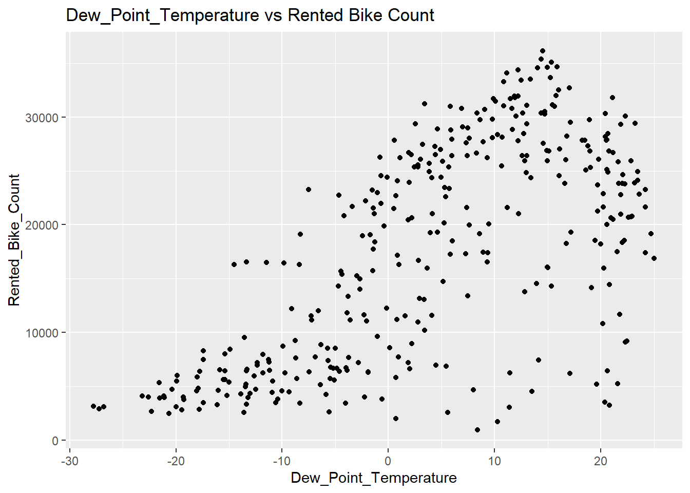
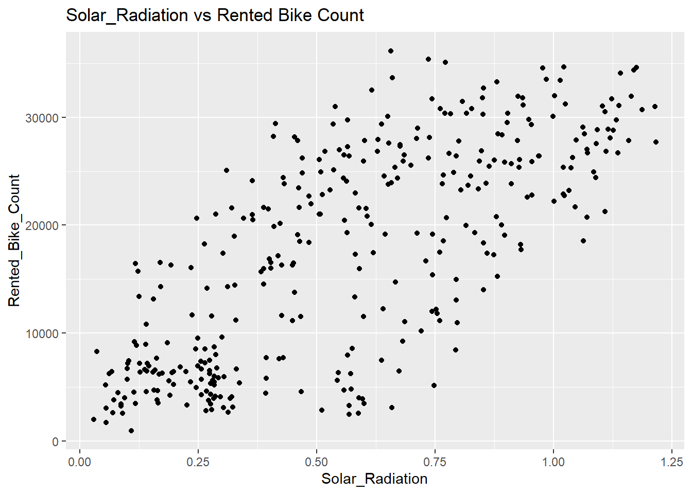

Date, Seasons, Holiday, and Functioning_Day were all set to character when loading the file. All of the other variables were set to numeric.
To look at the basic summary statistics of numerical variables, the summary function can be used. Most of the variables look reasonable, though there are some like Rainfall and Snowfall that have at least half of the data being 0. Density plots or box plots could be used to check the distributions of the data.
# Basic Summary Statistics for Numerical Variablessummary(bike_sharing)
Date Rented_Bike_Count Hour Temperature
Length:8760 Min. : 0.0 Min. : 0.00 Min. :-17.80
Class :character 1st Qu.: 191.0 1st Qu.: 5.75 1st Qu.: 3.50
Mode :character Median : 504.5 Median :11.50 Median : 13.70
Mean : 704.6 Mean :11.50 Mean : 12.88
3rd Qu.:1065.2 3rd Qu.:17.25 3rd Qu.: 22.50
Max. :3556.0 Max. :23.00 Max. : 39.40
Humidity Wind_Speed Visibility Dew_Point_Temperature
Min. : 0.00 Min. :0.000 Min. : 27 Min. :-30.600
1st Qu.:42.00 1st Qu.:0.900 1st Qu.: 940 1st Qu.: -4.700
Median :57.00 Median :1.500 Median :1698 Median : 5.100
Mean :58.23 Mean :1.725 Mean :1437 Mean : 4.074
3rd Qu.:74.00 3rd Qu.:2.300 3rd Qu.:2000 3rd Qu.: 14.800
Max. :98.00 Max. :7.400 Max. :2000 Max. : 27.200
Solar_Radiation Rainfall Snowfall Seasons
Min. :0.0000 Min. : 0.0000 Min. :0.00000 Length:8760
1st Qu.:0.0000 1st Qu.: 0.0000 1st Qu.:0.00000 Class :character
Median :0.0100 Median : 0.0000 Median :0.00000 Mode :character
Mean :0.5691 Mean : 0.1487 Mean :0.07507
3rd Qu.:0.9300 3rd Qu.: 0.0000 3rd Qu.:0.00000
Max. :3.5200 Max. :35.0000 Max. :8.80000
Holiday Functioning_Day
Length:8760 Length:8760
Class :character Class :character
Mode :character Mode :character
For categorical variables we can look at the values that they take on.
# Finds the count of the Date valuesbike_sharing |>group_by(Date) |>summarize(count =n())
As you would expect there is a roughly equal spread of entries for each season.
# Finds the count of the holidaysbike_sharing |>group_by(Holiday) |>summarize(count =n())
# A tibble: 2 × 2
Holiday count
<chr> <int>
1 Holiday 432
2 No Holiday 8328
# Finds the count of the functioning daysbike_sharing |>group_by(Functioning_Day) |>summarize(count =n())
# A tibble: 2 × 2
Functioning_Day count
<chr> <int>
1 No 295
2 Yes 8465
There’s far fewer holiday entries than non-Holiday, as well as far fewer non-functioning days than functioning ones.
The Date will be converted to a datetime variable, and the three categorical variables, Seasons, Holiday, and Functioning_Day will be converted to factors so they can be used in a model.
# Converting variables using mutate to store as the same namebike_sharing <- bike_sharing |>mutate(Date =as.POSIXct(Date, format ="%d/%m/%Y"),Seasons =as.factor(Seasons),Holiday =as.factor(Holiday),Functioning_Day =as.factor(Functioning_Day))bike_sharing
The response variable of our data is the Rented Bike Count. We want to know how the explanatory variables vary with it. We can look at some summary statistics for each numeric variable like mean, standard deviation, covariance with rented bike count, and correlation with rented bike count.
# For numeric columns that aren't rented bike count or hour# Find the mean, sd, and cov and cor with rented bike countbike_sharing |>summarize(across(where(is.numeric) &!matches("Rented_Bike_Count|Hour"),.fns =list(mean = mean,sd = sd,cov_Bike =~cov(.x, Rented_Bike_Count),cor_Bike =~cor(.x, Rented_Bike_Count)),.names ="{.col}_{.fn}")) |># Round all values to 3 decimal placessummarize(across(everything(), ~round(.x,3))) |># This creates one wide tibble, but we want it to be longerpivot_longer(# Choose all the columns from abovecols =everything(),# Split up the variable name into a column, then all the value columnsnames_to =c("variable", ".value"),# Have to use regex to split on the underscore that separates the # variable name from the function namenames_pattern ="^(.*)_(mean|sd|cor_Bike|cov_Bike)$" )
These variables are on fairly different scales, so we may need to standardize them. The variable that correlated most highly with bike rentals is temperature. Humidity, rainfall, and snowfall are all negatively correlated with bike rentals and you might expect. That being said, a lot of these correlations are weak.
Next, here are the summary statistics of Rented Bike Count across the levels of each categorical variable.
# Summary Statistics of Rented Bike Count across Seasonsbike_sharing |>group_by(Seasons) |>summarize(mean_bikes =mean(Rented_Bike_Count),med_bikes =median(Rented_Bike_Count),SD_bikes =sd(Rented_Bike_Count),IQR_bikes =IQR(Rented_Bike_Count))
There seems to be a clear pattern in that more bikes are rented in the spring, summer, and fall, than in the winter, which is what we would expect due to the cold weather.
# Summary Statistics of Rented Bike Count across Holidaysbike_sharing |>group_by(Holiday) |>summarize(mean_bikes =mean(Rented_Bike_Count),med_bikes =median(Rented_Bike_Count),SD_bikes =sd(Rented_Bike_Count),IQR_bikes =IQR(Rented_Bike_Count))
Finally, for the Functioning Day variable no bikes were sold on non-functioning days. This means that future non-functioning days will most likely also have 0 bikes rented. Therefore, we will subset the data to only look on the days that were functioning.
# Subsetting the data for only Functioning Days, then removing variablebike_sharing <- bike_sharing |>filter(Functioning_Day =="Yes") |>select(everything(), -Functioning_Day)bike_sharing
Next we will summarize the data across the hours so there is only one observation per day.
# Summarizing data to only have one observation per daybike_sharing <- bike_sharing |>group_by(Date, Seasons, Holiday) |>summarize(across(c(Rented_Bike_Count, Rainfall, Snowfall), sum),across(c(Temperature, Humidity, Wind_Speed, Visibility, Dew_Point_Temperature, Solar_Radiation), mean),.groups ="drop")bike_sharing
# A tibble: 353 × 12
Date Seasons Holiday Rented_Bike_Count Rainfall Snowfall
<dttm> <fct> <fct> <dbl> <dbl> <dbl>
1 2017-12-01 00:00:00 Winter No Holiday 9539 0 0
2 2017-12-02 00:00:00 Winter No Holiday 8523 0 0
3 2017-12-03 00:00:00 Winter No Holiday 7222 4 0
4 2017-12-04 00:00:00 Winter No Holiday 8729 0.1 0
5 2017-12-05 00:00:00 Winter No Holiday 8307 0 0
6 2017-12-06 00:00:00 Winter No Holiday 6669 1.3 8.6
7 2017-12-07 00:00:00 Winter No Holiday 8549 0 10.4
8 2017-12-08 00:00:00 Winter No Holiday 8032 0 0
9 2017-12-09 00:00:00 Winter No Holiday 7233 0 0
10 2017-12-10 00:00:00 Winter No Holiday 3453 4.1 32.5
# ℹ 343 more rows
# ℹ 6 more variables: Temperature <dbl>, Humidity <dbl>, Wind_Speed <dbl>,
# Visibility <dbl>, Dew_Point_Temperature <dbl>, Solar_Radiation <dbl>
Now that we’ve processed the data, we can look at the summary statistics again as well as some correlations and plots.
# Basic Summary Statistics# This time it also shows the values in Date or Categorical variablessummary(bike_sharing)
Date Seasons Holiday
Min. :2017-12-01 00:00:00.00 Autumn:81 Holiday : 17
1st Qu.:2018-02-27 00:00:00.00 Spring:90 No Holiday:336
Median :2018-05-28 00:00:00.00 Summer:92
Mean :2018-05-28 12:11:02.89 Winter:90
3rd Qu.:2018-08-24 00:00:00.00
Max. :2018-11-30 00:00:00.00
Rented_Bike_Count Rainfall Snowfall Temperature
Min. : 977 Min. : 0.000 Min. : 0.000 Min. :-14.738
1st Qu.: 6967 1st Qu.: 0.000 1st Qu.: 0.000 1st Qu.: 3.304
Median :18563 Median : 0.000 Median : 0.000 Median : 13.738
Mean :17485 Mean : 3.576 Mean : 1.863 Mean : 12.776
3rd Qu.:26285 3rd Qu.: 0.500 3rd Qu.: 0.000 3rd Qu.: 22.592
Max. :36149 Max. :95.500 Max. :78.700 Max. : 33.742
Humidity Wind_Speed Visibility Dew_Point_Temperature
Min. :22.25 Min. :0.6625 Min. : 214.3 Min. :-27.750
1st Qu.:47.58 1st Qu.:1.3042 1st Qu.:1087.0 1st Qu.: -5.188
Median :57.17 Median :1.6583 Median :1557.8 Median : 4.612
Mean :58.17 Mean :1.7261 Mean :1434.0 Mean : 3.954
3rd Qu.:67.71 3rd Qu.:1.9542 3rd Qu.:1874.3 3rd Qu.: 14.921
Max. :95.88 Max. :4.0000 Max. :2000.0 Max. : 25.038
Solar_Radiation
Min. :0.02917
1st Qu.:0.28333
Median :0.56500
Mean :0.56773
3rd Qu.:0.82000
Max. :1.21667
# Correlations between numeric variablesbike_sharing |>select(where(is.numeric)) |>cor(use ="pairwise.complete.obs")
There does seem to be a very high correlation between Temperature and Dew Point Temperature, which could potentially cause multicollinearity issues. Other than that the variable correlations seem fine. The variables most correlated with Rented Bike Count are Temperature, Dew_Point_Temperature, and Solar_Radiation. All of these are reasonably strong positive correlations.
ggplot(bike_sharing, aes(Date, Rented_Bike_Count)) +geom_point() +labs(title ="Date vs Rented Bike Count")

For the most part there are fewer bike rentals in the earlier part of the year than in the second half.
ggplot(bike_sharing, aes(Seasons, Rented_Bike_Count, color = Seasons)) +geom_boxplot() +labs(title ="Seasons vs Rented Bike Count")

This reiterates what is seen in the Date scatter plot that far fewer people rent bikes in the winter. The distributions also seem to be slightly left skewed.
ggplot(bike_sharing, aes(Holiday, Rented_Bike_Count, color = Holiday)) +geom_boxplot() +labs(title ="Holiday vs Rented Bike Count")
More people on average rent bikes on non-holidays.
ggplot(bike_sharing, aes(Rainfall, Rented_Bike_Count)) +geom_point() +labs(title ="Rainfall vs Rented Bike Count")

Seems to be a trend that generally the more rainfall the fewer people rent bikes.
ggplot(bike_sharing, aes(Snowfall, Rented_Bike_Count)) +geom_point() +labs(title ="Snowfall vs Rented Bike Count")

In this case the trend seems to be that if there’s any snowfall then very few people rent bikes.
ggplot(bike_sharing, aes(Temperature, Rented_Bike_Count)) +geom_point() +labs(title ="Temperature vs Rented Bike Count")

Generally the warmer the weather, the more people will rent bikes. The trend looks like it starts to decrease though once it gets too hot.
ggplot(bike_sharing, aes(Humidity, Rented_Bike_Count)) +geom_point() +labs(title ="Humidity vs Rented Bike Count")

There doesn’t seem to be much of a trend between humidity and bike rentals.
ggplot(bike_sharing, aes(Wind_Speed, Rented_Bike_Count)) +geom_point() +labs(title ="Wind_Speed vs Rented Bike Count")

Generally wind speed doesn’t seem to affect bike rentals until it gets extremely windy.
ggplot(bike_sharing, aes(Visibility, Rented_Bike_Count)) +geom_point() +labs(title ="Visibility vs Rented Bike Count")

Visibility doesn’t seem to have a trend with bike rentals.
ggplot(bike_sharing, aes(Dew_Point_Temperature, Rented_Bike_Count)) +geom_point() +labs(title ="Dew_Point_Temperature vs Rented Bike Count")

As we would expect based on the high correlation, the relationship between dew point temperature and bike rentals looks very similar to temperature.
ggplot(bike_sharing, aes(Solar_Radiation, Rented_Bike_Count)) +geom_point() +labs(title ="Solar_Radiation vs Rented Bike Count")

Generally it seems like the more solar radiation the more bike rentals. People probably like to ride bikes on nice sunny days. That being said, there’s a lot of variability here.
Split the Data
To train and test a model we need to split the data into a train and test set. The training set will then use cross validation to average out the error metric across the entire training set to see which model performed best.
# Random seedset.seed(10)# Get the split indexes and split the training and test set, stratified by seasonsbike_share_split <-initial_split(bike_sharing, prop =0.75, strata=Seasons)bike_train <-training(bike_share_split)bike_test <-testing(bike_share_split)# Get the 10 fold CV splitsbike_folds <-vfold_cv(bike_train, v =10)
Fitting MLR Models
First Recipe will be a basic multiple linear regression with rented bike count as the response.
bike_rec <-recipe(Rented_Bike_Count ~ ., data = bike_train) |># Don't include Date in the model, make it a unique IDupdate_role(Date, new_role ="ID") |># Find the day of the week, use it to determine the weekend, then drop Date_dowstep_date(Date, features =c("dow")) |>step_mutate(Weekend =factor(if_else((Date_dow =="Sat"| Date_dow =="Sun"),"Yes", "No"))) |>step_rm(Date_dow) |># Normalize all numeric variables to get them on the same scalestep_normalize(all_numeric(), -all_outcomes()) |># Create dummy variables for categorical variablesstep_dummy(Seasons, Holiday, Weekend) #|>#prep(training = bike_train) |>#bake(bike_train)
Second Recipe will be the same as the first but including some interaction terms.
bike_rec2 <-recipe(Rented_Bike_Count ~ ., data = bike_train) |># Don't include Date in the model, make it a unique IDupdate_role(Date, new_role ="ID") |># Find the day of the week, use it to determine the weekend, then drop Date_dowstep_date(Date, features =c("dow")) |>step_mutate(Weekend =factor(if_else((Date_dow =="Sat"| Date_dow =="Sun"),"Yes", "No"))) |>step_rm(Date_dow) |># Normalize all numeric variables to get them on the same scalestep_normalize(all_numeric(), -all_outcomes()) |># Create dummy variables for categorical variablesstep_dummy(Seasons, Holiday, Weekend) |># Create interaction terms between variablesstep_interact(terms =~ (starts_with("Seasons")):(Holiday_No.Holiday + Temperature)) |>step_interact(terms =~Temperature:Rainfall) #|>#prep(training = bike_train) |>#bake(bike_train)
Third Recipe will be the same as the second but also including quadratic terms for all of the numeric variables.
bike_rec3 <-recipe(Rented_Bike_Count ~ ., data = bike_train) |># Don't include Date in the model, make it a unique IDupdate_role(Date, new_role ="ID") |># Find the day of the week, use it to determine the weekend, then drop Date_dowstep_date(Date, features =c("dow")) |>step_mutate(Weekend =factor(if_else((Date_dow =="Sat"| Date_dow =="Sun"),"Yes", "No"))) |>step_rm(Date_dow) |># Normalize all numeric variables to get them on the same scalestep_normalize(all_numeric(), -all_outcomes()) |># Create quadratic terms for the numeric variablesstep_poly(all_numeric_predictors(), degree =2) |># Create dummy variables for categorical variablesstep_dummy(Seasons, Holiday, Weekend) |># Create interaction terms between variablesstep_interact(terms =~ (starts_with("Seasons")):(Holiday_No.Holiday + Temperature_poly_1)) |>step_interact(terms =~Temperature_poly_1:Rainfall_poly_1) #|>#prep(training = bike_train) |>#bake(bike_train)
# Set up the linear model fit to use the "lm" enginebike_mod <-linear_reg() |>set_engine("lm") |>translate()bike_mod
Linear Regression Model Specification (regression)
Computational engine: lm
Model fit template:
stats::lm(formula = missing_arg(), data = missing_arg(), weights = missing_arg())
# Create workflows for each recipe each using the same model engine# Then fit the models using 10 fold CVbike_CV_fit <-workflow() |>add_recipe(bike_rec) |>add_model(bike_mod) |>fit_resamples(bike_folds)bike_CV_fit2 <-workflow() |>add_recipe(bike_rec2) |>add_model(bike_mod) |>fit_resamples(bike_folds)bike_CV_fit3 <-workflow() |>add_recipe(bike_rec3) |>add_model(bike_mod) |>fit_resamples(bike_folds)
# Get metrics for each model fitrbind(bike_CV_fit |>collect_metrics(), bike_CV_fit2 |>collect_metrics(), bike_CV_fit3 |>collect_metrics())
# A tibble: 6 × 6
.metric .estimator mean n std_err .config
<chr> <chr> <dbl> <int> <dbl> <chr>
1 rmse standard 4248. 10 226. pre0_mod0_post0
2 rsq standard 0.813 10 0.0197 pre0_mod0_post0
3 rmse standard 3080. 10 278. pre0_mod0_post0
4 rsq standard 0.902 10 0.0183 pre0_mod0_post0
5 rmse standard 3035. 10 256. pre0_mod0_post0
6 rsq standard 0.907 10 0.0176 pre0_mod0_post0
The third fit which had dummy variables, interactions, and quadratics had the lowest average training cross validation root mean squared error. Therefore this will be the model we use to train on the full set.
# Create a workflow for the third recipe with the linear model engine# Then fit to the entire training set and test on the test setbike_best <-workflow() |>add_recipe(bike_rec3) |>add_model(bike_mod) |>last_fit(bike_share_split)# Get the test set errorbike_best |>collect_metrics()
# A tibble: 2 × 4
.metric .estimator .estimate .config
<chr> <chr> <dbl> <chr>
1 rmse standard 2963. pre0_mod0_post0
2 rsq standard 0.918 pre0_mod0_post0
For the third bike model that we’ve chosen, the RMSE on the test set was 2963.4.
Finally, we will get the final best model parameter estimates, standard errors, test statistics, and p-values.
# Get the final model coefficient tablebike_best |>extract_fit_parsnip() |>tidy()